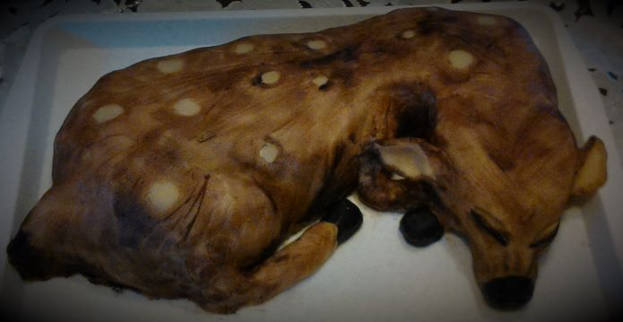

Általános iskolában matematika-kémia szakos tanárként dolgozom. Szabadidőmben szívesen foglalkozom webfejlesztéssel. A másik kedvenc hobbim különféle sütemények és torták készítése. A legjobb alkotásaim😃:

Elérhetőségeim
Amennyiben tetszenek a tortáim, az alábbi közözzégi média profilom valamelyikén további képeket, valamint elkészítési praktikákat és recepteket is találsz.